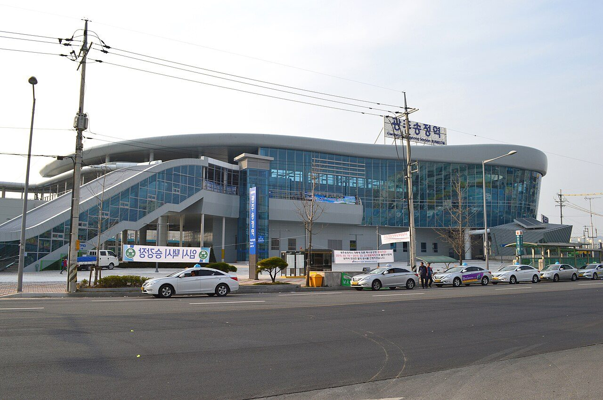
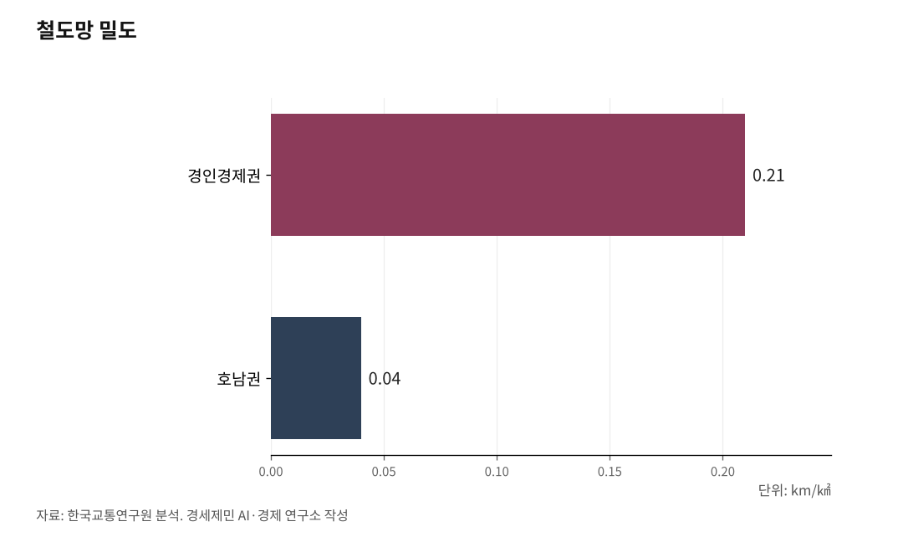

반도체 따라 길을 놓아라, 환황해선·호남광역급행·무안공항
인천공항~무안공항 서해선이 환황해선의 시작, 군산~목포 110km가 마지막 고리
호남광역급행철도로 전주·광주·남원·목포를 순환시켜야 520만이 한 생활권
반도체는 항공화물, 멈춘 무안국제공항을 살려 환황해 화물 거점으로
삼성과 SK가 서남권에 800조원을 들여 반도체 팹(공장) 4기를 짓는다. 공장만으로는 돈이 돌지 않는다. 원료와 장비가 들고 제품이 나가는 길이 있어야 한다.

호남은 그 길이 성기다. 반도체 투자에 맞춰 철도와 도로, 공항을 함께 깔아야 한다.
1. 길이 없으면 800조도 돌지 않는다
폴 크루그먼은 1991년 신경제지리학에서 집적경제를 좌우하는 핵심 변수로 운송비용을 꼽았다. 기업과 사람이 한곳에 모이는 까닭은 운송비를 줄이기 위해서다. 길이 막히면 모여도 이점이 사라진다.
호남이 그렇다. 한국교통연구원 분석을 보면 호남권 철도망 밀도는 1㎢당 0.04km로, 경인경제권 0.21km의 5분의 1이다. 광주·전남·전북 520만이 인구로는 존재하나 생활권으로는 끊겨 있다.
도쿄는 다르다. OECD 분석에서 집적경제의 정점은 885만명인데, 도쿄는 촘촘한 철도가 혼잡비용을 상쇄해 1800만명을 한 경제권으로 묶었다. 철도가 경제권의 크기를 정한다. 800조 공장을 지어도 길이 없으면 호남 안에서 돈이 돌지 않는다.

2. 환황해선을 열어라
동해선은 2025년 1월 부산에서 강릉까지 이어졌다. 서해안에는 종단 간선이 없다. 진짜 서해선은 북쪽 인천국제공항과 남쪽 무안국제공항을 잇는 노선이어야 한다.
마지막 고리가 군산과 목포 사이 110km다. 군산에서 새만금·부안·고창·영광·함평을 거쳐 무안으로 내려가 호남고속선과 만난다. 사업비 4조7919억원으로, 제4차 국가철도망에서는 추가 검토사업에 머문다.
북쪽은 제2공항철도가 인천공항을 잇는다. 인천공항과 무안공항을 두 끝으로 묶으면 서해안 종단축, 곧 환황해선이 열린다. 제5차 국가철도망에 담아야 첫발을 뗀다.
3. 호남광역급행철도로 순환시켜라
호남 안은 순환이 안 된다. 광주에서 전주로 가려면 익산을 우회한다. 호남 내부를 잇는 철도가 호남선과 전라선뿐인 탓이다. 먼저 전주와 광주를 고속철도로 직결해야 한다.
그 위에 호남광역급행철도를 깐다. 새만금·익산·전주·남원·광주·나주·목포·여수·순천을 순환으로 잇는 망이다. 전주~광주~화순~보성~순천을 거쳐 부산까지 뻗으면 영남과도 직결된다. 두 거점을 빠르게 묶으면 투자대상지와 인력이 한 생활권으로 돈다.
강호축은 이와 별개다. 강릉에서 충청을 거쳐 목포까지 잇는 전국 대각선 축으로, 충북선 고속화(청주공항~제천 봉양 85.5km, 1조9058억원, 2031년)와 오송 연결선이 놓이면 호남에서 강릉까지 직결된다.
4. 무안공항을 살려 반도체를 띄워라
반도체는 항공화물이다. 가볍고 비싸며 빠른 운송이 필요해 비행기로 나간다. 인천공항이 반도체 수출의 관문인 까닭이다.
호남에는 무안국제공항이 있다. 김대중공항으로 바꾸자는 캠페인도 인다. 활주로를 2800m에서 3160m로 늘리는 공사가 70% 진척됐고, 2027년 호남고속철도와 직결되면 전국 지방공항 가운데 유일하게 고속철도와 이어진다. 환황해선이 무안공항에서 만나니, 서해안 종단축의 남쪽 관문이 된다.
새만금국제공항은 8077억원을 들여 지을 계획이었으나 2025년 9월 법원이 환경영향평가 미흡 등을 들어 기본계획 취소 판결을 내렸다. 좁은 국토에 공항을 겹쳐 짓느니, 무안공항을 철도로 단단히 잇는 편이 효율에 맞다.
다만 지금 시설로는 어림없다. 화물기는 가득 실으면 더 긴 활주로가 있어야 뜬다. A350F는 만재 이륙에 약 2900m, B777F는 약 3300m가 필요하다. 무안은 활주로가 2800m라 대형 화물기를 가득 싣고 띄우지 못한다. 360m를 늘려 3160m가 되면 A350F는 만재로 뜨지만, B777F를 가득 실어 미주·유럽으로 보내려면 그래도 모자라 인천공항(3750~4000m)처럼 더 늘려야 한다. 화물터미널도 연 5만t에 그치고, 2024년 12월 참사 뒤로는 운항이 멈췄다.
반도체를 띄우려면 무안공항에 새로 투자해야 한다. 운항을 정상화하고, 활주로를 더 늘려 대형 화물기를 받고, 화물터미널과 계류장을 키우고, 통관시설과 배후 물류단지를 깔아야 한다. 그래야 공장에서 만든 칩을 무안에서 바로 띄운다. 무안공항 인프라 투자가 800조 반도체의 하늘길을 가른다.
5. 철도는 교통을 넘어 균형발전 축이다
호남 철도 투자는 수도권 광역급행과 다르다. 수도권은 인프라가 포화라 투자 효과가 자산 가격으로 빠진다. 호남은 인프라가 비어 투자가 실물경제로 직결된다. 케인즈가 말한 승수효과가 지역에서 크게 돈다.
녹색철도라는 값도 있다. 철도는 같은 거리에서 자동차보다 탄소를 적게 뿜는다. 전남이 전국 1위로 생산하는 재생에너지로 전철을 굴리면 탄소중립 물류가 된다. 길과 에너지와 산업이 한 권역에서 맞물린다.
도로는 기본이다. 도로를 놓을 때 철도 선로를 함께 설계하면 길을 두 번 파지 않는다. 모두가 고속일 필요는 없다. 수요에 맞춰 고속과 준고속, 일반선을 섞으면 재정과 탄소를 아낀다.
환황해선이 두 공항을 잇고, 호남광역급행철도가 호남을 순환하며, 강호축이 전국과 잇고, 무안공항이 하늘길을 열면, 800조 반도체가 비로소 돈다. 서울 일극의 국토가 다중심으로 바뀌는 길이다.
※ 이 기사는 인공지능 프로그램 클로드 오푸스 4.8을 활용해 작성했다.
참고문헌
· 산업통상부, "대한민국 대도약 3대 메가프로젝트 국민보고회", 2026.06.29.
· 국토교통부, "제4차 국가철도망 구축계획(2021~2030)", 2021.07.
· 대한민국 정책브리핑(국토교통부), "새만금항 인입철도 기본계획 확정·고시…2033년 개통", 2025.11.12.
· 한국교통연구원, "초광역경제권 실현을 위한 대도시권 광역급행철도 추진방안", 2023.
· 한국공항공사, "공항별 시설현황(무안국제공항)", 2025.
사진 출처
· [대표사진] Saigen Jiro, "Gwangju Songjeong Station building.JPG", 위키미디어 공용, CC0, https://commons.wikimedia.org/wiki/File:Gwangju_Songjeong_Station_building.JPG
※ 이 기사는 인공지능을 활용해 작성했습니다.
관련기사
- 삼성·SK 800조 호남행, 국가균형발전 닻 올랐다
- 공장만으론 안 된다, 호남에 인재를 부른다
- 70년 구호 국가균형발전, 마침내 첫발이 '호남반도체'
- 통계로 본 영·호남 격차, '역차별'은 어디에 있나
저작권자 © AI경세제민 무단전재 및 재배포, AI학습 및 활용 금지